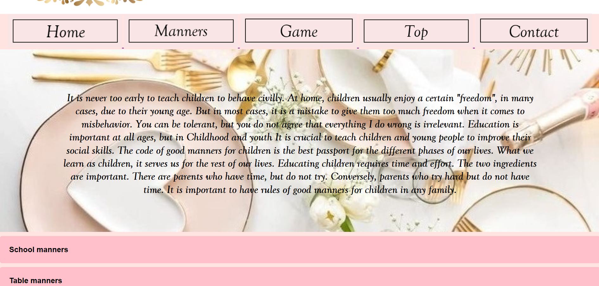
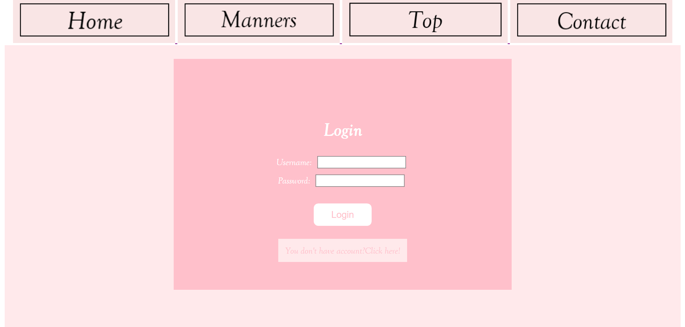
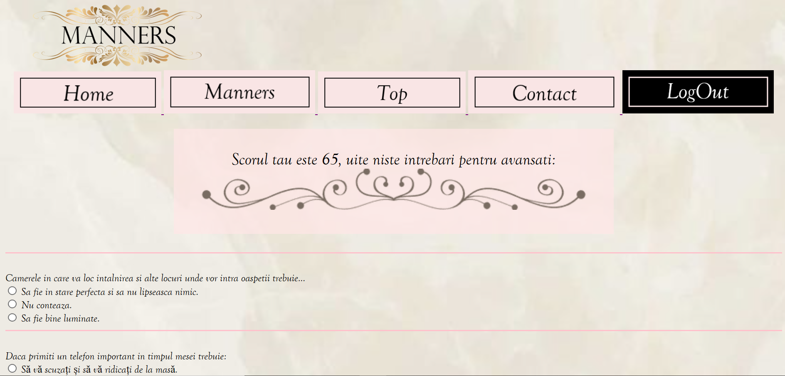
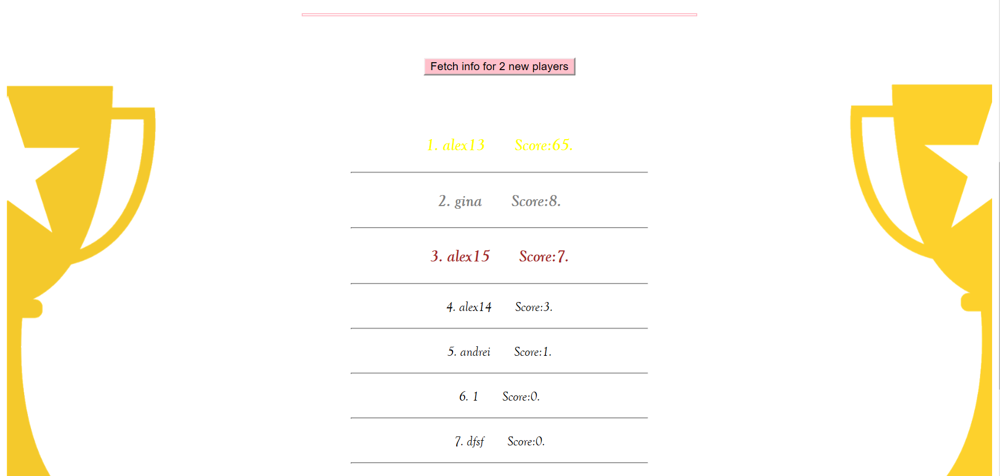

GoMaR (Good Manners Recommender) is an application that presents a learning environment of good manners.
The application provides a user with a set of rules for a specific category, such as children, men or women and also has the testing of knowledge gained through a game. This game, consisting of grid answer questions, memorizes a score for each user to place him in a top of the players.
Shortly after we took the task, we started the design for the web application.The first thing we did was to create a simple architecture, starting from simple ideas and after a while we came to the following structure:
We allocated a lot of time to learning and researching. We started with a meeting to establish the basic ideas and the division of roles between us, after that focusing on learning the basics of HTML and CSS.
The first time I created the design for Home, Login and Register pages. For a reference, we have the images:
After the approach of having a minimal design and corresponding to the theme, we have implemented the rules manual in the application.
For example, we have the page of good manners for kids:
After we have prepared the rules, we want to play, so we have implemented the login part without which we cannot enter the game:
After everything is ready, we can enter the game:
When almost everything is ready, we thought of making a hierarchy of players according to the score, which would make the game even more "tight":
The technologies we have used are: